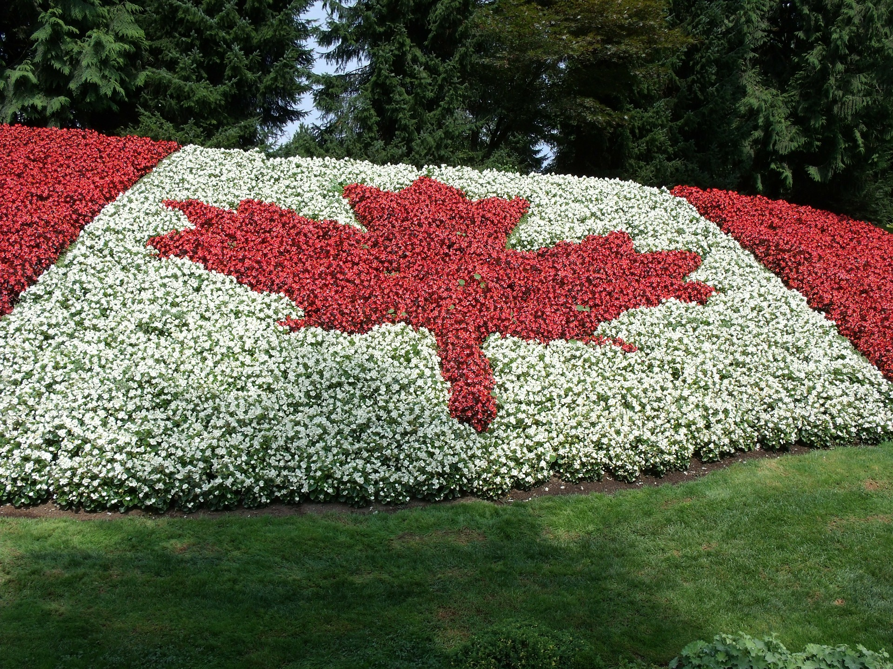

We went on a a trip for 4 days

Our group took an awesome road trip to Canada which started July 1, 2015 and ended July 7, 2015.
Day 1
The Montreal Biodome (French: Biodôme de Montréal) is a facility located at Olympic Park in Montreal that allows visitors to walk through replicas of four ecosystems found in the Americas. The building was originally constructed for the 1976 Olympic Games as a velodrome. It hosted both track cycling and judo events. Renovations on the building began in 1989 and in 1992 the indoor nature exhibit was opened.
Day 2
Old Montreal (French: Vieux-Montréal) is the oldest area in the city of Montreal, Quebec, Canada, with few remains dating back to New France. Located in the borough of Ville-Marie, the area is bordered on the west by McGill St., on the north by Ruelle des Fortifications, on the east by Rue Saint Andre and on the south by the Saint Lawrence River. Following recent amendments, the district has been expanded slightly to include the rue des Soeurs Grises in the west, Saint Antoine St. in the north and Saint Hubert Street in the east. It also includes the Old Port of Montreal. Most of Old Montreal was declared an historic district in 1964 by the Ministère des Affaires culturelles du Québec.[2]
Day 3
Mount Royal (French: mont Royal, IPA: [mɔ̃ ʁwajal]) is a large hill or small mountain in the city of Montreal, immediately west of downtown Montreal, Quebec, Canada, the city to which it gave its name. The hill is part of the Monteregian Hills situated between the Laurentians and the Appalachians. It gave its Latin name, Mons Regius, to the Monteregian chain.
The hill consists of three peaks: Colline de la Croix (or Mont Royal proper) at 233 m (764 ft), Colline d'Outremont (or Mount Murray, in the borough of Outremont) at 211 m (692 ft), and Westmount Summit at 201 m (659 ft) elevation above mean sea level.